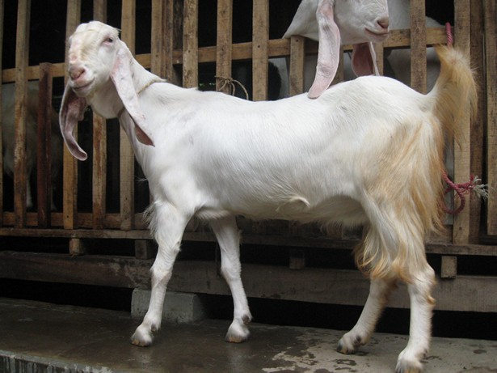
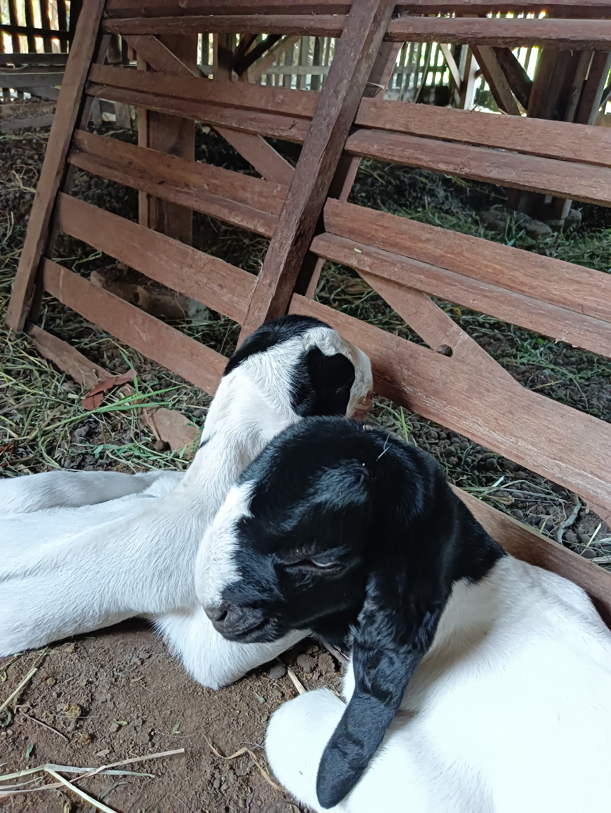

Indukan Senduro x Etawa
Persilangan kambing Jamnapari ras Etawa dengan kambing lokal Lumajang
Harga: Rp 6.000.000

Pejantan Etawa Kaligesing
Kambing ini sering digunakan untuk kontes karena badannya yang tinggi tegap, telinganya panjang, dan ekornya bagus.
Harga: Rp 30.000.000

Anakan Senduro x Etawa
Memiliki postur panjang, tinggi dan lebar Bulu dominan warna putih Tidak bertanduk, atau bertanduk tapi tidak berkembang Bentuk Muka Cembung jika dilihat dari samping Telinga Panjang hingga 30 – 50 cm, Tinggi jantan dewasa mencapai 90 – 120 cm, sedangkan betina dewasa antara 65 – 90 cm.
Harga: Rp 2.000.000